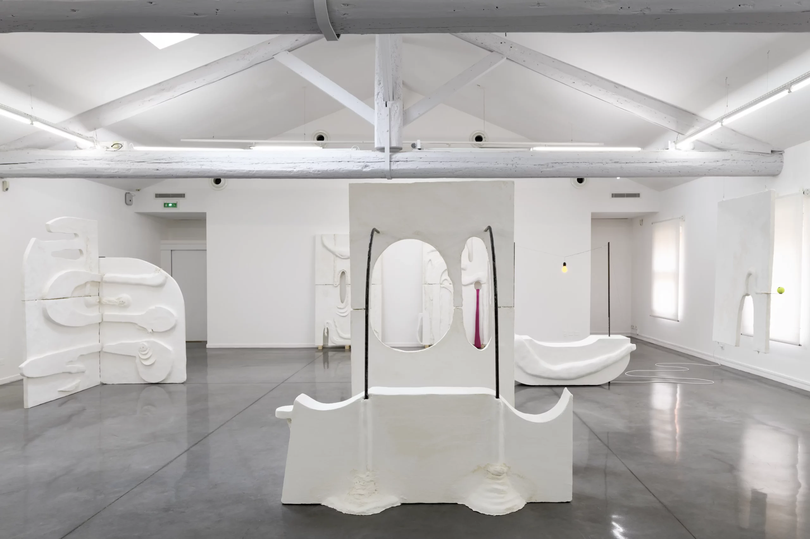
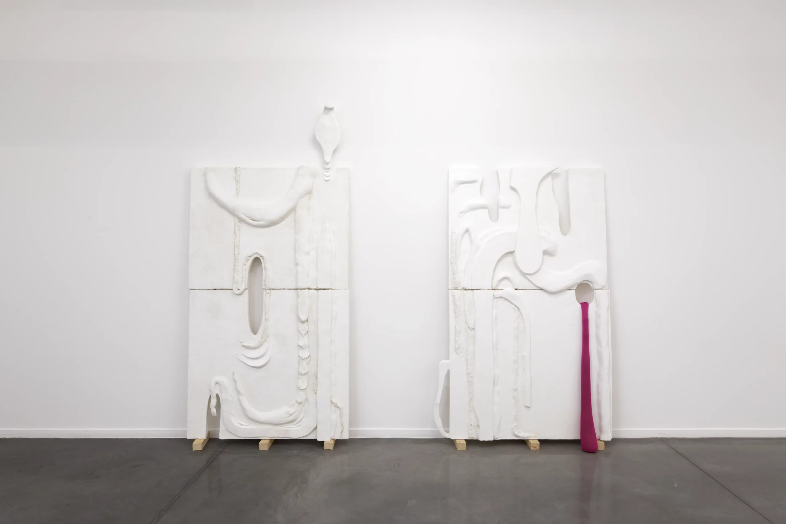
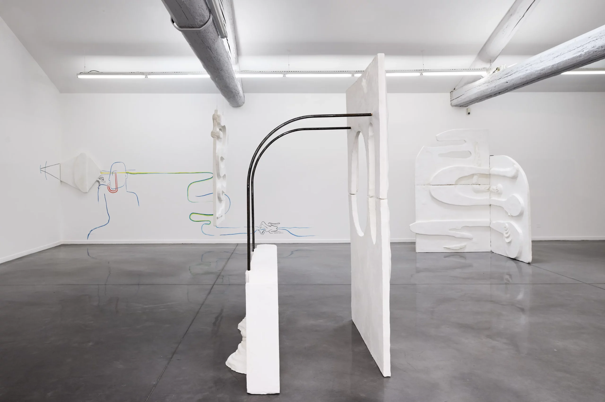
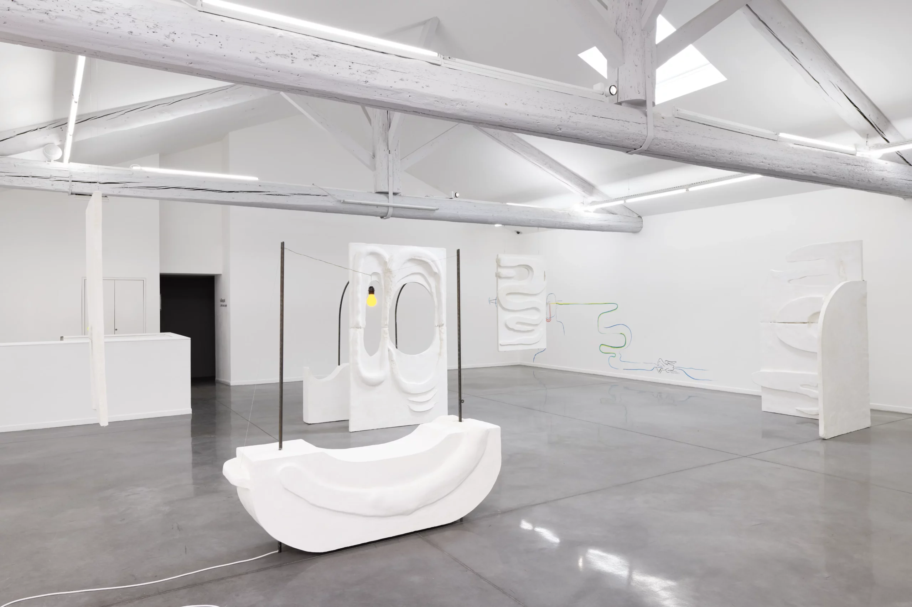

The beast in the jungle
1 janvier 2018




MRAC Sérignan, 2018
Curator Sandra Patron
“Her drawing practice combines abstract and figurative motifs: enigmatic forms connected not only to the body but also to drawing, with an almost edible appearance, like tools that support or extend the work of the hand.”
The exhibition title at the Mrac, “The Beast in the Jungle”, borrows from Henry James’s 1903 novella. It tells of a man convinced that he is destined for something extraordinary and unsettling; while waiting obsessively for this beast, he lets both life and love pass him by.
Sandra Patron
Photographs Aurélien Mole